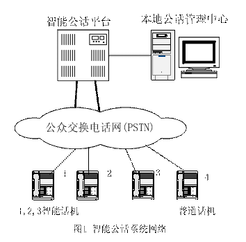
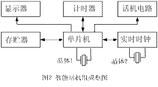

智能公话系统中同步计费终端的计时检测
海 涛 解放军信息工程大学信息工程学院
朱 江 郑州市质量技术监督检测中心
熊民宣 陕西省计量测试研究所
摘 要： 本文分析了智能公用电话系统的构成和业务流程，分析了智能话机的构成。说明了当智能话机存在计时计费功能时（这种话机也称为同步计费终端），必须进行计量检测，并提出了可行的检测方法。
关键词：智能公话 同步计费终端 业务流程 计时计费 检测方法
随着公用电话领域市场竞争的加剧，中国铁通、中国联通已经纷纷加入到公用电话业务的争夺之中，以各种形式抢占公用电话市场。在此背景下，郑州通信公司新建了预付费有人值守智能公话系统，已发展代办户1万家以上，公话代办户采用的话机是山东神思公司生产的HA128型智能电话机。
经分析其工作过程和在线测试，我们发现，这能智能电话机存在计时计费模块。当我们按照常规的方法对这种同步计费终端进行计时计费检定时，发现检定不了。一方面，这种话机必须在线工作，离开电信局的用户线路，它就不工作。另一方面，它也不像原来的计费器靠反极信号启动。对于这种计费终端，如何去检测？这正是本文所要讨论的问题。
首先我们要对这种智能公话系统和这种同步计费终端进行分析。
一、 智能公话系统组成及业务流程
1． 智能公用电话系统组成
如图1所示， 智能公用电话系统主要由智能话机、智能公话平台、公用电话管理中心三部分组成。
智能平台系统是将业务交换、业务控制、语音处理等功能集中于一个平台之上。利用专用智能平台实现本地公话业务比较便利，功能设置和数据修改也较灵活，比较适合发展本地业务。
智能公用电话机（代办户话机），与智能系统平台相结合，彻底解决盗打、预付费等问题，提高了运营商的公话管理水平。
2． 智能呼叫业务流程
智能话机1向普通话机4发起一个呼叫。用户摘机，拨被叫号码，等待应答。被叫摘机应答，双方通话。
而智能话机与智能公话平台之间却进行了较复杂的通信过程。
（1）智能话机自动呼叫到智能公话平台，进行认证；普通话机无法在该线路中工作。
（2）认证通过，智能公话平台呼叫被叫号码，被叫摘机，主、被叫电话连通，平台收到应答信号，开始计时计费，并监视公话账号卡上的余额和通话时长。智能话机根据计费平台发给它的计时信号，同步计时计费，动态显示计时计费信息。
（3）主叫挂机，则呼叫结束。平台停止计时计费，向公话代办户的公话账号卡扣费。智能话机停止计时计费，根据话机显示的话费，公话代办户向使用电话的消费者收费。

可见，智能平台存在着计时计费系统，必须进行周期检测。关于智能平台的计时检测已有论述。本文重点讨论智能话机计时计费的检测问题。
二、智能电话机的组成框图
图2给出了智能话机的组成框图。其中晶体1一般在12MHz以上，用于单片机及计时器工作，其稳定度直接影响通话时长测量的准确度。晶体2是32.768kHz，它用于实时时钟工作，实时时钟经校对后用于给系统提供时刻数据。

当智能话机本身存在计时模块，且与智能平台计时同步，我们称为同步计费终端。由于它用于贸易结算时，具有计量器具的性质，因此必须进行周期检定。
任意智能话机是否存在计时计费模块，需要根据它所处的公话系统和话机本身的特点来进行判断，不能一概而论。
三、同步计费终端计时误差检测方法
1． 常规检定遇到的问题
由于同步计费终端的计时启动信号并非是来自交换机的反极信号，所以采用检测反极信号启动计时的检定仪无法进行检定。
采用检测被叫话机摘机后的语音信息技术（如反极信号发生器）的方法进行检定也不行，因为智能话机在启动计时之前多次与平台进行语音带内的通信，此时真正被叫尚未摘机；其次，它本身误差较大，一般为1s，而一般要求检定仪的计时误差优于0.1s。
由于大部分同步计费终端采用主叫挂机停止计费的主控复原方式，所以采用控制被叫固定电话和移动电话（含GSM电话模块）的检测方法，只能解决少部分同步计费终端的计时检测问题。
对此，我们提出了如下的检定方法。
2． 我们的检定方法
被叫线路上放置一模拟遥控应答仪，XDJ-6型检定仪主机串接在智能电话机和交换机之间的用户线路中。
当主叫进行呼叫时，被叫遥控应答仪收到交换机的振铃信号后，自动摘机，发送应答信号，检定仪主机和同步计费终端同时启动各自的计时计费装置，当定时到后，检定仪发出挂机信号，二者同时停止。直接比较二者话单，即可判断同步计费终端计时计费是否合格。
3． 同步计费终端计量要求
智能电话机计时误差为：±(1+T×10-3)s， T为检定仪设定的时间间隔。
同步计费终端计刻误差为：1min。
四、结束语
本文分析了智能平台公用电话系统的构成呼叫过程，分析了智能话机的构成，从而得出：当智能电话机本身存在计时计费装置时，也称为同步计费终端，必须进行周期检定。由于常规的方法不能对其检定，所以我们所提出了新的计时计费的检定方法，该方法理论可行，现场操作简便可靠，值得大力推广。
The Discussion about Verification Method of Timing & Charging Module in Intelligent Telephone
HAI Tao, ZHU jiang，XIONG min-xuan
(Institute of Information Engineering , Information Engineering University Zhengzhou 450002, China)
Abstract: By the analysis of intelligent public telephone system, service flow and intelligent telephone set, timing & charging module has found. in the telephone set. A new verification method is proposed.
Key words: intelligent telephone; service flow; timing & charging; verification method
本文来自《中国计量》2007年第3期